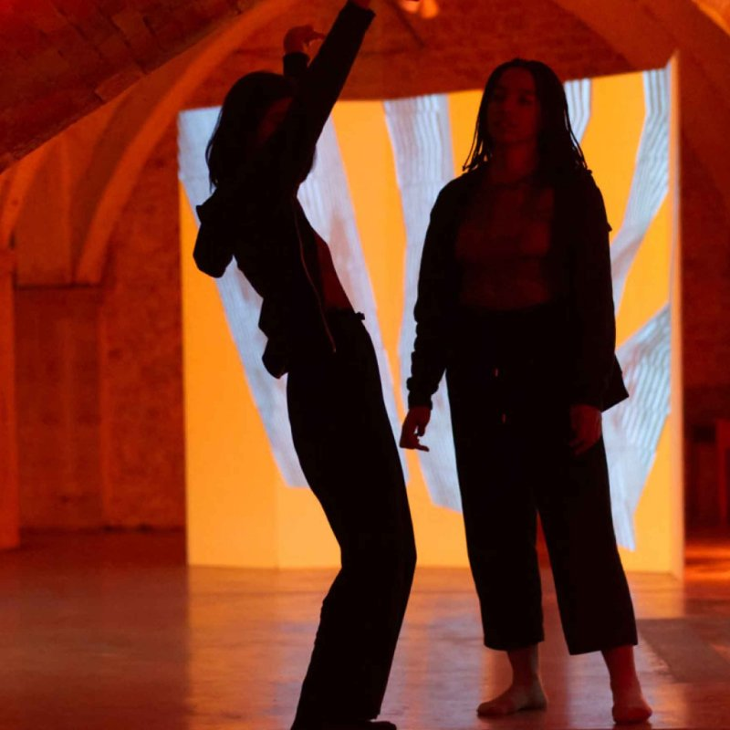
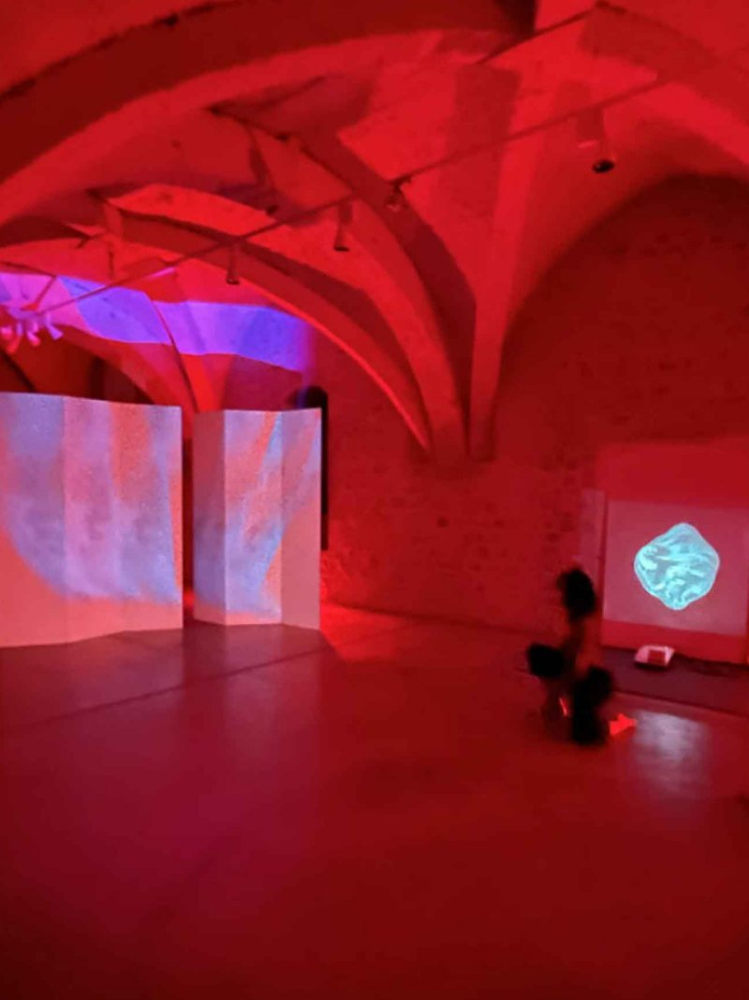
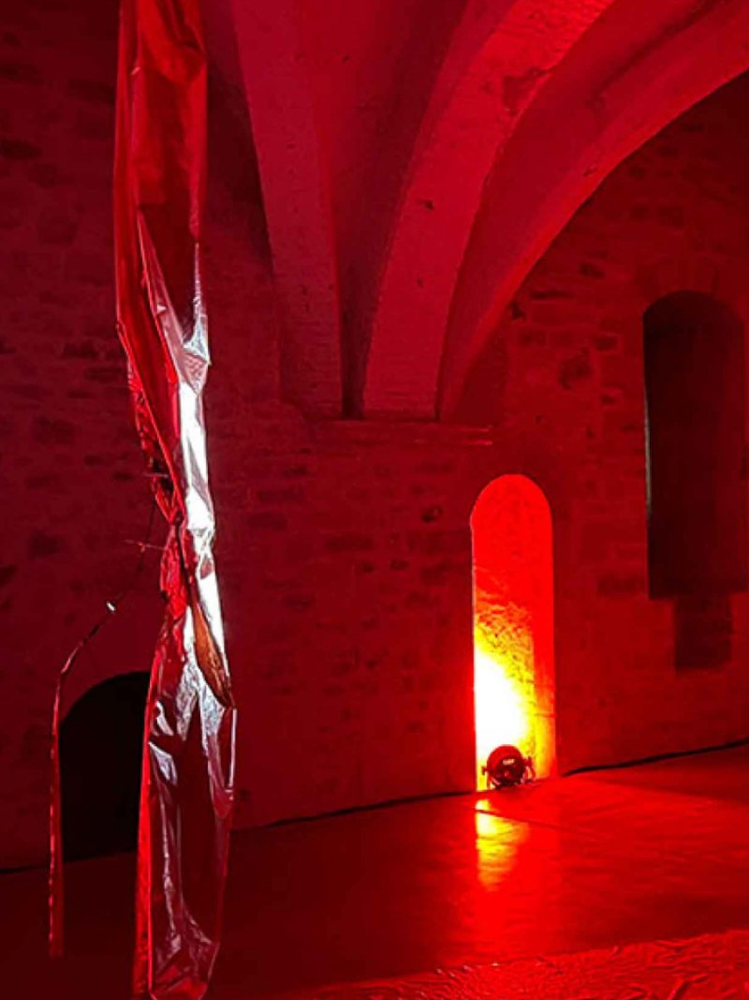
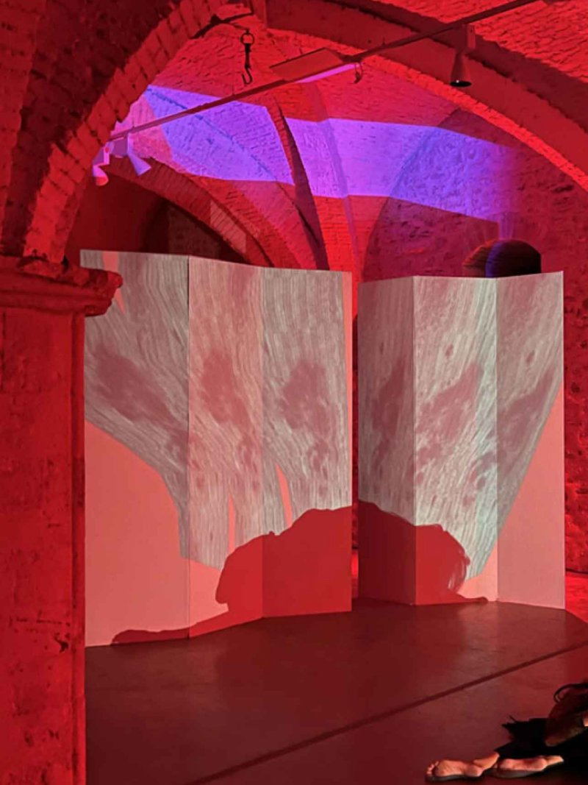

Nebula
Installazione site-specific — Bologna, 2025

Corpi, spazio e macchine che comunicano attraverso dati e movimento.
Nebula nasce da una residenza artistica e si sviluppa nel tempo fino alla messa in scena a distanza di circa un anno. È un sistema installativo in cui performer danzatrici interagiscono con l'ambiente tramite sensori indossabili, attivando un sistema visivo generativo che reagisce e si trasforma in tempo reale.
Un ecosistema sensibile, in cui gesto, codice e materia visiva coincidono — dove l'umano e la macchina non si contrappongono ma coesistono.
"Umano e macchina che coesistono — non in opposizione, ma in dialogo. Il sensore come lingua comune tra il corpo che danza e lo spazio che risponde."
In una cripta allestita per l'evento, due danzatrici aprono un dialogo basato sul concept dell'opera. I sensori indossabili trasmettono i dati del movimento a una scultura di Paulina Herrera, video mappata con un solido che reagisce e si trasforma seguendo il gesto della performer.
Lo scenario si sposta in un secondo ambiente dove l'interazione avviene con un braccio robotico — una medusa meccanica ideata da Davide Porta. La performance si chiude consegnando i sensori al pubblico: chiunque può diventare parte del sistema.




La cripta cambia natura quando il sistema è attivo. Il movimento delle danzatrici non si limita allo spazio fisico — si propaga nella scultura, nella luce, nel suono.
Il pubblico osserva un dialogo tra corpi organici e strutture artificiali che risponde in tempo reale a ogni variazione del gesto.
Alla fine della performance i sensori vengono consegnati al pubblico. Il confine tra spettatore e performer si dissolve — chiunque può attivare il sistema, modificarne il comportamento, diventare parte dell'ecosistema.
Non una conclusione, ma un'apertura.


